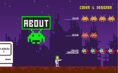
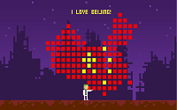
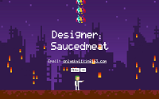
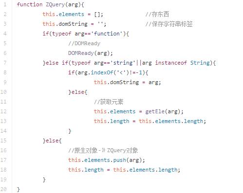
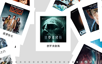
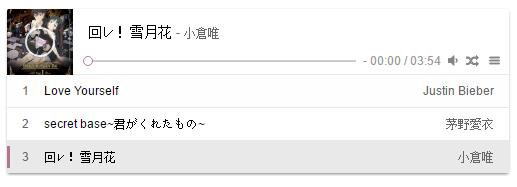

-
- Basic info
- 个人信息: 李鑫 / 男 / 21岁
- 教育经历: 大专
- 专业: 计算机网络
- Github: saucedmeat
- 首页: https://saucedmeat.github.io
-
- Experience
个人首页
-
像素风的自我展示戳我
  通过信息图设计，动态图设计,用CSS3新特性，利用Sass编写CSS，利用媒体查询，加强了屏幕适配能力。利用jQuery增加特效，通过鼠标滑轮的滚动的方式，进行着类似游戏通关的互动效果，为您带来强烈的设计感和丰富的画面感。
工作/实习经历
-
沈阳靓职文化传播有限公司(2015.07-2016.07)
- 项目名称：靓域网 http://www.liangsns.com
- 项目介绍：一个致力于解决本地商业互联网化的转型，共建一个通畅的消费者联盟的app和移动端网站。
- 具体职责：负责靓域网的前端开发，配合iOS和Android两个研发部门，用Html+Css分别设计了网站的布局，javascript以及数据交互，开发了移动端站点和手机app。极速研发，快速上线，数据采集也做到了标准化，研发成本大大降低，数据积累增长迅速。靓域网在本地商业 产品线中开始推广。运营期间不断完善。
擅长技术
-
HtmlCSSJavascriptReactAjaxjQueryBootstrapWebRTCHTML5网页设计平面设计PhotoshopCanvas等等
个人项目
-
北京樊川网络科技有限公司(智能社)前端课程(2016.07-2016.11)
- 深入学习了智能社的前端课程，提高了自身技能，深人了解了web前端开发流程，更加扎实的js基础，提高了逻辑思维，学习了javascript新技术，完成课时计划。
-
"ZQuery" Github
使用面向对象的方法模仿jQuery编写的一个简单库
 -
React画廊 Github Gallery
使用ReactJS构架的图片画廊应用
 -
3D捕鱼达人 Github fish
运用CSS3，js，canvas，模仿开发的捕鱼达人H5小游戏。
-
Ooouuu音乐播放器 Github Player
有爱的H5音乐播放器
 -
3D轮播图插件 Github jCarrousel
一个3D轮播图 jQuery 插件，实现了3D轮播效果，可以自适应宽度、自适应图片数量，有方便的切换按钮，另外实现了播放、停止、切换到任意一张图片的API

-
很多原生javascript demo Github Clock
-
好多网站 Github 爱奇艺
做了很多很多网站的首页
-
- Skill 技能清单
-
(・ˍ・*)
精通PS可以将设计图良好的还原，有一定的设计能力。精通HTML5，CSS3，Canvas，Svg，能够编写利于SEO的语义化的HTML，有良好的编码习惯。能够完成较复杂的布局，精通Less，Sass， stylus，Autoprefixer等CSS预处理和后处理的方法，掌握CSS的优化和性能提升，熟练掌握移动端布局，熟悉jQueryMoblie、zeptoJS。
-
（p・_q）
熟练掌握javascript,能够脱离jQuery等类库，用原生js编程。熟练掌握jQuery，研究过jQuery的源代码。能够运用模块化、面向对象的方式编程，熟悉MVC思想，熟悉Cookie，了解Javascript设计模式，了解ES6语法的新特性。
-
(￣ε￣；)
熟练使用seaJS、requireJS模块化工具，熟练掌握Ajax交互，跨域jsonp交互。掌握AngularJS，ReactJS等流行框架。
-
(｡･ω･)ﾉﾞ
了解node.js，了解PHP的语法规则，可以与后台工作的完美对接。大学专业课Java、C，有java开发经验，Android开发经验，了解Objective-c语法，读过《C Primer Plus》能进行简单的网络编程和多线程编程，了解Ruby。
-
｡◕‿◕｡
熟练掌握SVN，Git，Grunt，Gulp，Yeoman等前端工具。了解前端安全，性能优化方面的知识。
-
(｡・`ω´･)
了解Websocket，Webworker。熟练运用Webstrom、Sublime3、eclipse、Wex5、PhoneGap等开发工具。
-
<(▰˘◡˘▰)>
熟悉正则表单验证，熟悉了解Bootstrap、YUI响应式框架，熟悉使用echarts等图表工具，了解discuz，DEDECMS模版建站工具。
其他
-
我
是一个有趣的人，微博粉丝 3000+
对技术充满热情
有认真的做事态度
有学习能力 总结能力 分析能力 是一个能够自我进步的人
梦想成为
全栈工程师！！！